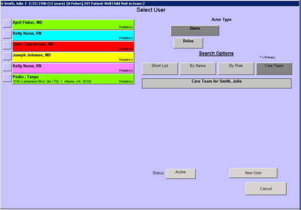

|
Description
This screen is used whenever you need to select an encounterPRO user. This screen appears when:
- You want to select a recipient for a Message and/or assign Tasks (ToDo Items)
- You want to assign an encounter to a specific provider
When the screen initially appears, the short list of users displays. You can search for the desired user by Name, Role, or Specialty. If a Patient Care Team has been created for the patient, you can also select users from the Care Team list.
How to Access This Screen
Access this screen by:
- Selecting the Recipient bar on the Create Message screen
- Selecting the Recipient bar on the Create Task screen
- Selecting the Encounter Owner bar on the Create New Encounter or Edit Encounter screens
Screen Example

Want to Learn More?
Related Solutions
Concept: Patient Care Team
Screen: Create New Encounter
Screen: Edit Encounter Information
How to: Create a Task
How to: Forward Tasks
How to: Change the Encounter Owner
How to: Search
How to: Modify a Short List
|